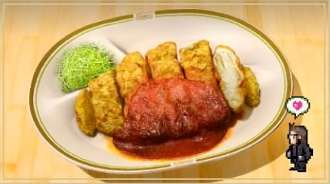

Breaded Cutlet with Tomato

Description
A thin slice of meat from the leg or ribs of mutton, veal, pork or chicken. a dish made of such slice, often breaded.
Ingredients
- 2 tablespoons olive oil.
- 1 head of garlic (about 8–12) cloves, peeled.
- ¼ cup apple cider vinegar.
- 2 tablespoons Worcestershire sauce.
- ¼ teaspoon cinnamon.
- Freshly ground black pepper.
Steps
- To make the tomato sauce, heat olive oil in a large soup pot over medium-high heat until shimmering.
- Add garlic and cook for another minute or so, until fragrant.
- Next, make the cutlet sauce by whisking together all ingredients. Refrigerate until ready to serve.
- Place one of the cutlets inside a heavy-duty zipper-lock bag and pound gently to ¼-inch thickness, using a meat pounder or the bottom of a heavy skillet.
- Heat ½ inch grapeseed oil in a large wok or cast-iron skillet.
- Enjoy!
Home